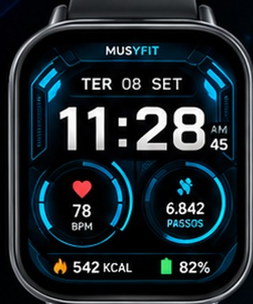
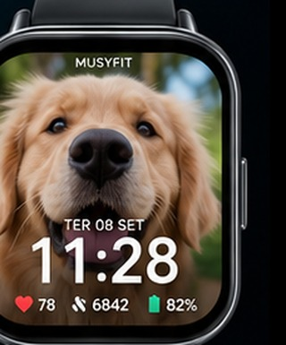

MusyFit Watch
Redmi Watch 5 Active + T800 Ultra2 • versão 3.0
10 temas oficiais MusyFit
Agora os temas usam exatamente os visuais que definimos. Toque em qualquer modelo para abrir uma pré-visualização grande, selecionar e exportar.
Tema selecionado

Tech Future
Pré-visualização na proporção 320 × 385 do Redmi Watch 5 Active.
Minha Foto

TER 08 SET
11:28
♥ 78 • 👟 6842 • 🔋82%
Escolha uma foto, ajuste e salve. O MusyFit gera a imagem em 320 × 385 PNG.
Meus relógios
Desconectado
Nenhum relógio validado
Toque em Buscar. O app procura Redmi Watch 5 Active, T800 Ultra2 e outros BLE.
Diagnóstico técnico (UUIDs)
Nenhum serviço lido.
Aplicar tema
Conecte um relógio para ver o método compatível.
Compatibilidade real
Redmi Watch 5 ActiveBusca/diagnóstico Bluetooth no MusyFit. Aplicação oficial de mostradores continua pelo Mi Fitness; o app prepara e salva o tema.
T800 Ultra2Busca/diagnóstico BLE no MusyFit. O modelo costuma usar HIwatch Pro; a transferência direta depende dos serviços expostos pelo firmware.
QR Code
Seu QR aparece aqui
Use o leitor para identificar QR de pareamento ou links de aplicativos companheiros.
Estabilidade
A versão 3.0 não marca “conectado” apenas porque encontrou o relógio. O status verde só aparece depois de uma sessão GATT válida e descoberta de serviços.